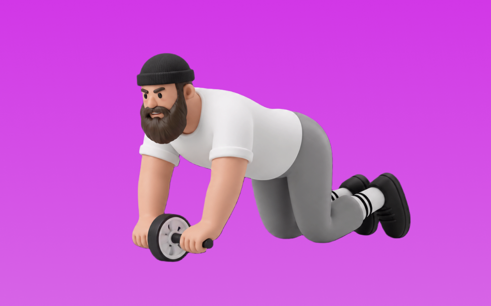

アブホイールロールアウト

アブホイールロールアウトとは、アブローラーを使って「動かす」動作で腹筋群（腹直筋、腹横筋）を鍛える種目です。伸長位で強い負荷がかかるのが特徴で、反動を抑えてコントロールしながら反復します。お腹の引き締めと体幹固定力の向上が期待できます。
- 対象部位
- 体幹
- 器具
- 自重
- 記録形式
- 回数
- 別名
- アブローラー
YouTube動画
-
【地獄の腹筋ローラー】4メニューで、腹直筋をいじめ抜け！2分間の高負荷筋トレ
-
ロールアウト（Rollout）のやり方とフォーム
-
アブローラー（コロコロ）危険なやり方してない？ひどい腰痛になりますよ！初心者でも安全な使い方と正しいフォーム
-
腹筋ローラーの使い方｜一緒にお腹トレーニング【4種目】
-
アブローラー膝コロの正しいフォームでのやり方と腹筋への効かせ方
-
腹筋ローラーでバキバキに『最も腹筋に効くやり方、正しい姿勢、腰を痛めない方法』を教えます。
-
そのやり方危険です！腰を痛めるアブローラーのNGフォーム
-
腹筋ローラーの効果的な使い方【公式】
-
【たった10回】超初心者でも必ず効く！腹筋へ猛烈に効きすぎる地獄の筋トレ
-
腹筋を割る！初心者でもできる腹筋ローラーの正しいやり方
-
自宅で筋トレ出来る！アブローラーは効くのか？効果と注意点の総まとめ。 腹筋割る？お腹引き締め？使い方を詳しく！how to do ab roller avoiding injury
-
効果的なアブローラーのやり方・始め方
-
６パックを作る2分間の地獄メニュー【もしアブローラーが無くても大丈夫】
-
腹筋ローラー、効果的な使い方は？現役トレーナーが解説
-
AB WHEEL ROLLOUT GUIDE | Proper Form & Mistakes to Avoid
-
【効きすぎ注意！】下腹部が激痛になるアブローラーの使い方！
-
[20-second 3 sets] Correct method and training for the ab roller to get abs in just 1 minute a da...
-
腹筋ローラーの正しいフォームと腰を痛めない方法【細マッチョ講座】
-
【筋トレ】アブローラーの正しいやり方【腹筋】
-
【一日3分】腹筋を本気でバキバキに割る地獄のメニュー【タオル代用可】
-
【アブローラーで腹筋バキバキ】世界チャンプ直伝の腹筋5種目
-
【筋トレ】理想の腹筋を作るためにオススメ！レベル別のアブローラーのやり方がこれです
YouTubeショート
-
【腹筋ローラーあるある】良い例・悪い例 #shorts
-
【腰痛】【肩痛】になるアブローラーのフォームはこの3つが原因です。 #パーソナルトレーナー #筋トレ #アブローラー #腹筋ローラー
-
正しいアブローラーのやり方！フォーム！
-
【筋トレ解説】自宅で簡単にできる💪腹筋ローラーの正しい使い方解説！
-
バキバキの腹筋を作る！正しいアブローラーの使い方！#shorts #筋トレ #fitness
-
【腹筋上級者】アブローラーのコツと注意点
-
腹筋ローラーの使い方間違えてます！ #ショート
-
【これで完璧！】間違いやすいアブローラーの正しいやり方
-
腹筋ローラー 1カ月続けた成果 #筋トレ #腹筋ローラー #アブローラー #腹筋 #ダイエット
-
腹筋ローラーの選び方！負荷が高いのはどっち？ #筋トレ #腹筋ローラー #自宅トレーニング #training #ダイエット #アブローラー
-
【腹筋を割る】アブローラー正しいやり方と効かせる2つのポイント #筋トレ #腹筋 #アブローラー
-
腹筋ローラーの正しいやり方を初心者向けに解説！女性必見！びっくりするぐらいお腹痩せる！
-
腹筋ローラー1年間やり続けた結果 #アブローラー #腹筋ローラー #筋トレ #腹筋
-
正しいアブローラーのやり方！(初心者編)
-
腹筋ローラーを１０年間続けた結果・・・#shorts
-
持田選手とハムちゃんに腹筋ローラーの使い方についてレクチャーしていてもらいました！次はどの種目の解説をやってほしいかコメントしてね！#筋トレ #volix #トレーニング #ちょこっと惜しい
-
アブローラーが絶望的に効く意識教えます！
-
腹筋ローラーで効果的に鍛えるコツは？
-
立ちコロできるようになる！腹筋！💪
-
ドンキで買ったアブローラーが腹筋に効き過ぎな件。#shorts
-
【腹筋崩壊】フォームローラー引っ張り出してきて！#ダイエット
-
次世代型腹筋ローラーで体型は変わるのか!? 1週間検証、結果発表〜！
-
ドンキで買ったアブローラーが筋トレの神アイテム過ぎた。#shorts
-
【アブローラー】立ちコロ習得してシックスパック【腹筋トレ】#shorts
-
[陸上]腹筋ローラー 極めてみた
-
下腹部が筋肉痛になるアブローラーのやり方！ #筋トレ #腹筋 #50代
-
アブローラーの正しいフォーム！#筋トレ #筋トレ #腹筋ローラー #アブローラー #腹筋
動作方法
- 体幹を固定して姿勢を整える
- 反動を使わず、腹部の収縮を感じる
- 呼吸を止めずに動作する
動作ポイント
- 腰を反らしすぎない
- 首に力を入れすぎない
ワンポイントアドバイス
- 回数よりも体幹の安定を優先する
- 腰に違和感がある場合は可動域を調整する
目的別回数設定
目的や体力に応じた一般的な目安です。無理のない範囲で調整してください。
- 筋力アップ
- 1〜5回
- 筋肥大
- 6〜12回
- 持久力アップ
- 13〜20回
YouTube動画について
動画はYouTubeの公開情報をもとに表示しています。内容は投稿者によるもので、Biggrによる監修ではありません。
アプリを入手
筋トレやトレーニングの記録はBiggrにお任せください。今すぐ無料で使い始められます。